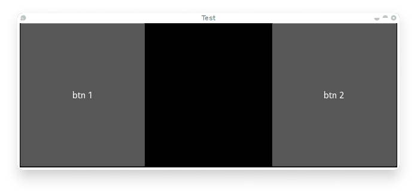

{kind=link}
Table Of Contents
Events and Properties¶
イベントは Kivy プログラミングの重要な部分です。 GUI 開発の経験がある人にとっては驚くべきことではないかもしれませんが、 初心者にとっては重要な概念です。 イベントがどのように働くか、 そして、 プログラムとイベントをどのように結びつける(bind)かを理解すると、 Kivy のあらゆる場所にイベントがあることが分かるでしょう。 これらは、 あなたが Kivy に求める振る舞いを簡単に構築できるようにします。
以下の図は、Kivy フレームワークでイベントがどのように処理されるかを示しています。
Introduction to the Event Dispatcher¶
フレームワークの最も重要な基底クラスの１つは EventDispatcher クラスです。 このクラスを使用すると、 イベント・タイプを登録し、 関連部分(通常は他のイベント・ディスパッチャ)に発送(dispatch)できます。 Widget や Animation や Clock クラスは、 イベント・ディスパッチャの例です。
EventDispatcher オブジェクトは、イベントの生成と処理をメイン・ループに依存しています。
Main loop¶
上の図で概説したように、Kivy には「メイン・ループ」(main loop)があります。 このループは、 アプリケーションの存続期間中ずっと実行されており、 アプリケーションを終了(exit)するときにのみ終了(quit)します。
ループ内では、その反復ごとに、 ユーザー入力またはハードウェア・センサーまたはその他のいくつかのソースからイベントが生成され、 フレームがディスプレイにレンダリングされます。
あなたのアプリケーションには、 メイン・ループによって呼び出されるコールバック(詳細は後述)を指定します。 コールバックに時間がかかりすぎたり、 まったく終了(quit)しない場合、 メイン・ループが壊れ、あなたのアプリは適切に動作しなくなります。
Kivy アプリケーションでは、 長い/無限 ループやスリープを避けなければなりません。 たとえば以下のコードは無限ループとスリープの両方を行います:
while True:
animate_something()
time.sleep(.10)
あなたがこれを実行すると、 プログラムはループを終了せず、 Kivy に必要な他のすべてのことを実行できなくなります。 その結果、 操作できない黒いウィンドウが表示されます。 代わりに、 あなたは、 あなたの animate_something() 関数が繰り返し呼び出されるように「スケジュール」(schedule)する必要があります。
Scheduling a repetitive event¶
schedule_interval() を使用して、 1 秒あたり X 回、 関数またはメソッドを呼び出すことができます。 以下は、 my_callback という名前の関数を毎秒 30 回呼び出す例です:
def my_callback(dt):
print('My callback is called', dt)
event = Clock.schedule_interval(my_callback, 1 / 30.)
あなたが以前にスケジュールしたイベントのスケジュール実行を解除するには、 複数の方法があります。 その１つは cancel() または unschedule() を使用することです:
event.cancel()
と:
Clock.unschedule(event)
また、 あなたのコールバックでは戻り値として False を返すことができ、 そうすればそのイベントは自動的にスケジュール解除されます:
count = 0
def my_callback(dt):
global count
count += 1
if count == 10:
print('Last call of my callback, bye bye !')
return False
print('My callback is called')
Clock.schedule_interval(my_callback, 1 / 30.)
Scheduling a one-time event¶
schedule_once() を使用すると、 次のフレームや X 秒後など、「後で」関数を呼び出すことができます:
def my_callback(dt):
print('My callback is called !')
Clock.schedule_once(my_callback, 1)
これは、セット後 1 秒で my_callback が呼び出されます。 2番目の引数は、 関数を呼び出す前に待機する時間(秒単位)です。 ただし、 2 番目の引数に特別な値を使用すると、他の結果を得ることができます:
X が 0 より大きい場合(X > 0)、 コールバックは X 秒で呼び出されます
X が 0 の場合(X == 0)、コールバックは次のフレームの後に呼び出されます
X が -1 の場合(X == -1)、コールバックは次のフレームの前に呼び出されます
主に -1 は、 既にスケジュールされているイベントに参加していて、 次のフレームが発生する「前」に呼び出しをスケジュールする場合に使用されます。
関数呼び出しを繰り返すための 2 つ目の方法は、 最初に schedule_once() でコールバックを 1 回スケジュールし、 コールバック自体の中でこの関数の2回目の呼び出しを行うことです:
def my_callback(dt):
print('My callback is called !')
Clock.schedule_once(my_callback, 1)
Clock.schedule_once(my_callback, 1)
警告
メイン・ループは要求どおりにスケジュールを維持しようとはしますが、 スケジュールされたコールバックが正確に呼び出されるのが何時かについては不確実性があります。 アプリケーション内の別のコールバックやその他のタスクに予想よりも時間がかかることがあるため、 タイミングが少しずれることがあります。
反復的なコールバックの問題に対する後者の解決策では、 最後の反復が終了してから少なくとも 1 秒後に次の反復が呼び出されます。 ただし、 schedule_interval() では、コールバックは毎秒呼び出されます。
Trigger events¶
次のフレームで一度だけ呼び出されるように関数をスケジュールして、 重複した呼び出しを防ぎたい場合があります。 あなたは以下のようにしてこれを達成したくなるかもしれません:
# First, schedule once.
event = Clock.schedule_once(my_callback, 0)
# Then, in another place you will have to unschedule first
# to avoid duplicate call. Then you can schedule again.
Clock.unschedule(event)
event = Clock.schedule_once(my_callback, 0)
プログラミングによりトリガーさせるこの方法は、 イベントが既に完了している場合でも常に unschedule を呼び出すため、コストがかかります。 また、 毎回新しいイベントが作成されます。 代わりに trigger を使用してください:
trigger = Clock.create_trigger(my_callback)
# later
trigger()
あなたが trigger() を呼び出すたびに、 あなたのコールバックの1回きりの呼び出しがスケジュールされます。 すでにスケジュールされている場合は再スケジュールされません。
Widget events¶
ウィジェットには、2 つのデフォルトのイベント・タイプがあります:
プロパティ・イベント: あなたのウィジェットの位置またはサイズが変更されると、イベントが発生(event is fired)します。
ウィジェット定義のイベント: たとえば Button が押される(pressed)か離される(released)と、 その Button に対してイベントが発生(fire)します。
ウィジェット・タッチ・イベント がどのように管理(manage)および伝達(propagate)されるかについては、 Widget touch event bubbling セクションを参照してください。
Creating custom events¶
カスタム・イベントでイベント・ディスパッチャを作成するには、 クラスにイベントの名前を登録してから、同一名称のメソッドを作成する必要があります。
以下の例をご覧下さい:
class MyEventDispatcher(EventDispatcher):
def __init__(self, **kwargs):
self.register_event_type('on_test')
super(MyEventDispatcher, self).__init__(**kwargs)
def do_something(self, value):
# when do_something is called, the 'on_test' event will be
# dispatched with the value
self.dispatch('on_test', value)
def on_test(self, *args):
print("I am dispatched", args)
Attaching callbacks¶
イベントを使用するには、 コールバックをイベントに結びつける(bind)必要があります。 イベントが発送(dispatch)されると、 その特定のイベントに関連するパラメーターを伴ってしてあなたのコールバックが呼び出されます。
コールバックは任意の python 呼び出し可能オブジェクト(python callable)にすることができますが、 イベントが発行する引数を受け入れるようにする必要があります。 このため、 通常は args リスト内のすべての引数をキャッチする *args 引数を受け入れるのが最も安全です。
例:
def my_callback(value, *args):
print("Hello, I got an event!", args)
ev = MyEventDispatcher()
ev.bind(on_test=my_callback)
ev.do_something('test')
コールバックを当てはめる(attach)方法の例については、 kivy.event.EventDispatcher.bind() メソッドのドキュメントを参照してください。
Introduction to Properties¶
プロパティ(properties)は、 イベントを定義してそれらに結び付ける(bind)優れた方法です。 基本的に、あなたのオブジェクトの属性の変更時は、その属性を参照するすべてのプロパティ(properties)が自動的に更新されるようなイベントを生成します。
あなたが処理したいデータのタイプを記述するさまざまな種類のプロパティ(properties)があります。
Declaration of a Property¶
プロパティを宣言するには、 クラス・レベルで宣言する必要があります。 あなあのオブジェクトが作成されると、 クラスは実際の属性をインスタンス化する作業を行います。 これらのプロパティは属性ではありません。 Kivyのプロパティとは、 あなたの属性に基づいてイベントを作成するためのメカニズムです:
class MyWidget(Widget):
text = StringProperty('')
__init__ をオーバーライドする場合、 常に **kwargs を受け入れ、 かつ、 super() を使用して親の __init__ メソッドを呼び出し、 あなたのクラス・インスタンスを渡します:
def __init__(self, **kwargs):
super(MyWidget, self).__init__(**kwargs)
Dispatching a Property event¶
デフォルトでは、Kivy プロパティは on_<property_name> イベントを提供します。 このイベントは、 プロパティの値が変更されたときに呼び出されます。
注釈
プロパティの新しい値が現在の値と等しい場合、 on_<property_name> イベントは呼び出されません。
たとえば、 以下のコードについて考えてみましょう:
1 class CustomBtn(Widget):
2
3 pressed = ListProperty([0, 0])
4
5 def on_touch_down(self, touch):
6 if self.collide_point(*touch.pos):
7 self.pressed = touch.pos
8 return True
9 return super(CustomBtn, self).on_touch_down(touch)
10
11 def on_pressed(self, instance, pos):
12 print('pressed at {pos}'.format(pos=pos))
上記コードの 3 行目:
pressed = ListProperty([0, 0])
ListProperty タイプの pressed プロパティを定義し、 デフォルト値 [0, 0] を与えます。 この時点から、 このプロパティの値が変更されるたびに on_pressed イベントが呼び出されます。
5行目にて:
def on_touch_down(self, touch):
if self.collide_point(*touch.pos):
self.pressed = touch.pos
return True
return super(CustomBtn, self).on_touch_down(touch)
Widget クラスの on_touch_down() メソッドをオーバーライドします。 ここでは、 touch とウィジェットとの衝突(collision)をチェックします。
touchがウィジェット内にある場合は、 pressed の値を touch.pos に変更し、 True を返します。 これは、 touchを消費し、それ以上伝播させたくないことを示します。
最後に、 touchがウィジェットの外にある場合は、super(...) を使用して元のイベント(original event)を呼び出し、 結果を返します。 これにより、 touch イベントの伝播が通常どおりに続行されます。
最後に 11 行目:
def on_pressed(self, instance, pos):
print('pressed at {pos}'.format(pos=pos))
プロパティ値が変更されるたびにプロパティによって呼び出される on_pressed 関数を定義します。
注釈
この on_<prop_name> イベントは、 プロパティが定義されているクラス内で呼び出されます。 あるプロパティが定義されているクラスの外側で、 そのプロパティの変更を 監視(monitor)/観測(observe) するには、以下に示すようにそのプロパティに結び付ける(bind)必要があります。
プロパティへの結び付け(bind)
アクセスできるのがウィジェット・インスタンスだけの場合、 プロパティへの変更を監視(monitor)する方法は？ あなたはプロパティに 結び付け (bind)ます:
your_widget_instance.bind(property_name=function_name)
たとえば、 以下のコードについて考えてみましょう:
1 class RootWidget(BoxLayout):
2
3 def __init__(self, **kwargs):
4 super(RootWidget, self).__init__(**kwargs)
5 self.add_widget(Button(text='btn 1'))
6 cb = CustomBtn()
7 cb.bind(pressed=self.btn_pressed)
8 self.add_widget(cb)
9 self.add_widget(Button(text='btn 2'))
10
11 def btn_pressed(self, instance, pos):
12 print('pos: printed from root widget: {pos}'.format(pos=.pos))
このコードをそのまま実行すると、 コンソールに 2 つの print ステートメントが表示されます。 1 つは CustomBtn クラス内で呼び出される on_pressed イベントからのもので、 もう 1 つはプロパティ変更に結び付け(bind)した btn_pressed 関数からのものです。
両方の関数が呼び出される理由は単純です。 結び付け(binding)はオーバーライドを意味しません。 これらの機能の両方を持つことは冗長であり、 通常、 プロパティの変更を リッスン(listening)/反応(reacting) する方法の 1 つだけを使用する必要があります。
on_<property_name> イベントまたはプロパティに結び付け(bind)られた関数に渡されるパラメータにも注意する必要があります。
def btn_pressed(self, instance, pos):
最初のパラメータは、 この関数が定義されているクラスのインスタンスである self です。 以下のようにインライン関数を使用できます:
1 cb = CustomBtn()
2
3 def _local_func(instance, pos):
4 print('pos: printed from root widget: {pos}'.format(pos=pos))
5
6 cb.bind(pressed=_local_func)
7 self.add_widget(cb)
最初のパラメーターは、 プロパティが定義されているクラスの「インスタンス」(instance)になります。
2 番目のパラメーターは、 プロパティの新しい値である「値」(value)です。
上記のスニペットから導き出された完全な例を以下に示します。 あなたは、 これをエディターにコピー・アンド・ペーストして実験するのに使えます。
1 from kivy.app import App
2 from kivy.uix.widget import Widget
3 from kivy.uix.button import Button
4 from kivy.uix.boxlayout import BoxLayout
5 from kivy.properties import ListProperty
6
7 class RootWidget(BoxLayout):
8
9 def __init__(self, **kwargs):
10 super(RootWidget, self).__init__(**kwargs)
11 self.add_widget(Button(text='btn 1'))
12 cb = CustomBtn()
13 cb.bind(pressed=self.btn_pressed)
14 self.add_widget(cb)
15 self.add_widget(Button(text='btn 2'))
16
17 def btn_pressed(self, instance, pos):
18 print('pos: printed from root widget: {pos}'.format(pos=pos))
19
20 class CustomBtn(Widget):
21
22 pressed = ListProperty([0, 0])
23
24 def on_touch_down(self, touch):
25 if self.collide_point(*touch.pos):
26 self.pressed = touch.pos
27 # we consumed the touch. return False here to propagate
28 # the touch further to the children.
29 return True
30 return super(CustomBtn, self).on_touch_down(touch)
31
32 def on_pressed(self, instance, pos):
33 print('pressed at {pos}'.format(pos=pos))
34
35 class TestApp(App):
36
37 def build(self):
38 return RootWidget()
39
40
41 if __name__ == '__main__':
42 TestApp().run()
上記のコードを実行すると、 以下の出力が得られます:
CustomBtn には視覚的な表現がないため、 黒く表示されます。 黒い領域を タッチ/クリック すると、 コンソールに出力が表示されます。
複合プロパティ(Compound Properties)¶
AliasProperty を定義するとき、 通常はゲッター(getter)関数とセッター(setter)関数を自分で定義します。 ここで、 bind 引数を使用してゲッター関数とセッター関数がいつ呼び出されるかを定義するのはあなた次第です。
以下のコードについて考えてみましょう。
1 cursor_pos = AliasProperty(_get_cursor_pos, None,
2 bind=('cursor', 'padding', 'pos', 'size',
3 'focus', 'scroll_x', 'scroll_y',
4 'line_height', 'line_spacing'),
5 cache=True)
6 '''Current position of the cursor, in (x, y).
7
8 :attr:`cursor_pos` is an :class:`~kivy.properties.AliasProperty`,
9 read-only.
10 '''
ここで、 cursor_pos は AliasProperty クラスであり、 ゲッターを _get_cursor_pos にセットし、 セッターを None に設定して使用します。 これは、これが読み取り専用のプロパティであることを意味します。
最後の bind 引数は、 bind= 引数で使用されるプロパティのいずれかが変更されたときに on_cursor_pos イベントが発送(dispatch)されることを定義します。